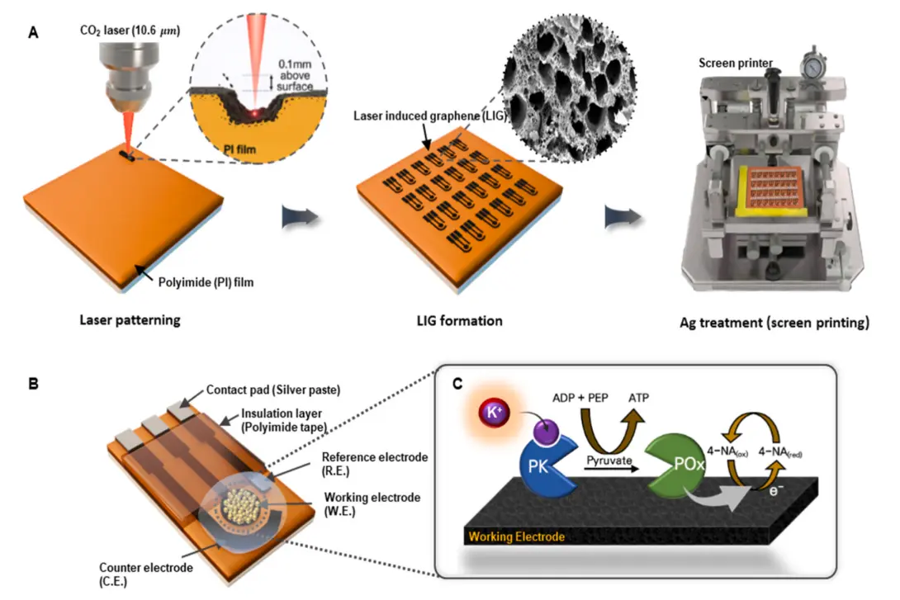

Calibration-Free Potassium Quantification via a Stoichiometric Enzyme Cascade on Laser-Induced Graphene
A potassium-dependent pyruvate kinase–pyruvate oxidase cascade on laser-induced graphene enables a rapid amperometric readout without conventional calibration.